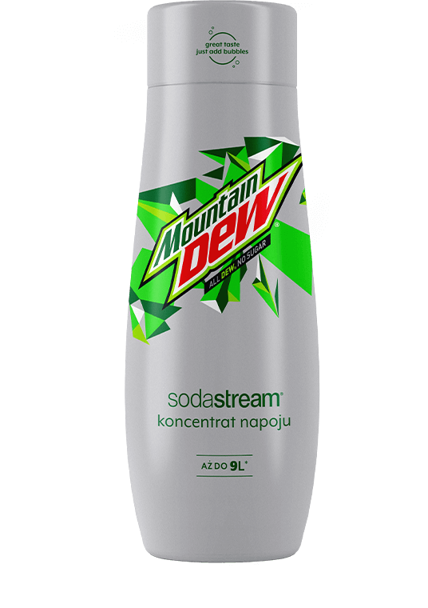

Syrop

SODASTREAM
SYROP MOUNTAIN DEW
FREE, 440 ML
Teraz dzięki produktom SodaStream odtworzysz oryginalny smak MOUNTAIN DEW FREE w swoim domu, używając tylko dwóch składników. Wystarczy woda i syrop MOUNTAIN DEW FREE. Zabąbelkuj w ekspresie SodaStream, dodaj syrop i gotowe!
Syrop SodaStream to mniej dźwigania, mniej jednorazowego plastiku oraz doskonały napój zawsze pod ręką, kiedy najdzie Cię na niego ochota.
Jedna SODASTREAM
Wiele możliwości

MOUNTAIN DEW FREE Z TAKĄ ILOŚCIĄ
BĄBELKÓW, JAKĄ LUBISZ
Zamień zwykłą wodę w przepyszny, orzeźwiający napój. Wystarczy, że zabąbelkujesz w ekspresie SodaStream i dodasz do gazowanej wody odrobinę syropu MOUNTAIN DEW FREE. Syrop SodaStream pozwoli Ci uzyskać oryginalny smak MOUNTAIN DEW bez cukru i bez sztucznych barwników. To nie wszystko! Dodatkowo będziesz w stanie dodać tyle bąbelków, ile lubisz. Ciesz się cudownym połączeniem cytrusów bez wychodzenia z domu.
gazuj
miksuj
smakuj


Stwórz swój własny, autorski napój

Czy wiesz, co będzie pasować do MOUNTAIN DEW? Cytrusy, kruszony lód, a nawet świeże zioła. Nasz przepis to: szklanka z napojem MOUNTAIN DEW FREE, kostka lodu, plasterek cytryny i kilka listków mięty. A c Ty przygotujesz dla swoich gości?
Jedna sodastream - Wiele możliwości
Spróbuj także innych smaków SodaStream. Wybierz klasyczne Pepsi lub Mirindę i przekonaj się, że smakują tak samo, jak napoje ze sklepowych półek. Odkryj również oryginalne smaki SodaStream, np. Cloudy Lemonade, Pink Grapefruit lub Orange Mango.